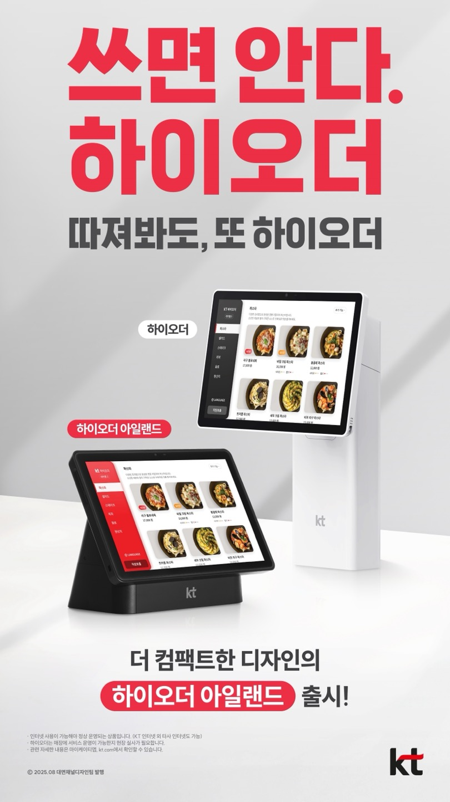

쓰면 쓸수록 하이오더, 따지면 따질수록 하이오더
하이오더 아일랜드 제품의 상세 정보와 자주 묻는 질문을 확인하세요.

[하이오더 아일랜드]
- 제품명: "하이오더 아일랜드"
- 구 명칭인 '하이오더2S'는 내부 자료나 전산 등에서만 사용합니다.
- 대 고객 정식 마케팅 명칭은 "하이오더 아일랜드"입니다.
- 출시일: 정식 시작일 8월 7일(목)부터
- 청약시작일 : 8월7일(목) 부터
- 개통가능일 : 8월 13일(수) 부터
- 제품 3대 특징:
- 다양한 매장 테이블 환경에 적용 가능한 탁상형 확장 제품
- 심플하고 세련된 디자인으로 어떤 매장에도 잘 어울리는 디자인
- 매장 인테리어를 한결 더 깔끔하게 하는 케이블 비노출 디자인
- 운영 방법: 단말기는 '하이오더2' 선택 + 거치대는 '하이오더S2'를 선택하는 조합으로 청약
| 명칭 | 사진 | 제원 | 특성 | 비고 |
|---|---|---|---|---|
| 하이오더S2 (아일랜드) |
크기(mm): 204 x 113 x 181 무게: 약 1.6 kg |
강화 플라스틱 재질 세이프 터치 마감 제로 갭 설계 |
탁상형 전용 하이오더 신상품으로 포지셔닝 |
네이밍 및 매핑 테이블
| 네이밍 | 비즈나루 청약화면 명칭 | 마케팅 네이밍(대고객) |
|---|---|---|
| 스탠드형 | 거치대(스탠드형) | 하이오더 |
| 스탠드고정형 | 거치대(스탠드고정형_하이오더2 전용) | - |
| 하이오더S2 | 거치대(하이오더S2S_하이오더2 전용) | 하이오더 아일랜드 |
| 탁상형1 | 거치대(탁상형1) | - |
| 탁상형2 겸용형 | 거치대(탁상형2겸용형_15인치 불가) | - |
| 벽걸이 고정형 | 거치대(벽걸이고정형) | - |
| 벽걸이 회전형 | 거치대(벽걸이회전형_하이오더2 불가) | - |
| 웨이팅 거치대 | 거치대(웨이팅_별도주문필요) | - |
FAQ
내부 영업채널용 FAQ 자료, 고객 유출 X
Q. 기존 하이오더S2 상품에 비해 가격은 얼마나 올라가는 것인지?
A. 하이오더S2 제품과 가격이 동일합니다. (단말도 하이오더S2만 선택 가능, 태블릿 사양 동일)
A. 하이오더S2 제품과 가격이 동일합니다. (단말도 하이오더S2만 선택 가능, 태블릿 사양 동일)
Q. 하이오더 아일랜드의 예상 타겟은?
A. 사전설치 시 탁상형 설치필요 요청한 고객 중 -> 디자인 중시, 유리테이블 사용 고객 등
A. 사전설치 시 탁상형 설치필요 요청한 고객 중 -> 디자인 중시, 유리테이블 사용 고객 등
Q. 기존 탁상형 거치대는 판매 중단인지?
A. 계속 판매합니다. 전체 거치대 종류에 대해서는 매뉴얼 참고 부탁 드립니다.
A. 계속 판매합니다. 전체 거치대 종류에 대해서는 매뉴얼 참고 부탁 드립니다.
Q. 배터리형으로만 사용이 가능한 것인지?
A. 상시전원도 가능합니다. (단, 이전에 공지된 KTS의 상시전원 제품 개통 조건 하에 가능)
A. 상시전원도 가능합니다. (단, 이전에 공지된 KTS의 상시전원 제품 개통 조건 하에 가능)
Q. 기존 탁상형 고객이 하이오더 아일랜드로 교체해달라고 요청할 경우에 가능한지?
A. 불가능합니다. 광역본부에서 시연용으로 IP 구매하는 것은 가능합니다.
A. 불가능합니다. 광역본부에서 시연용으로 IP 구매하는 것은 가능합니다.